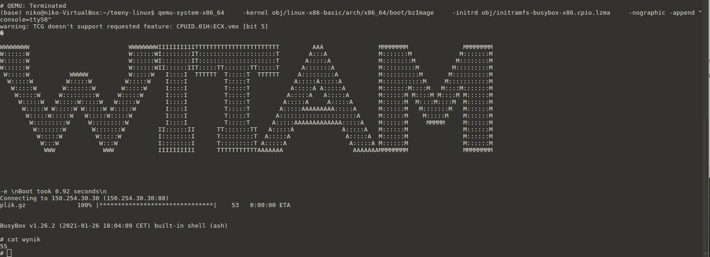
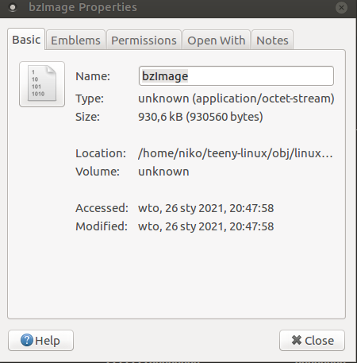
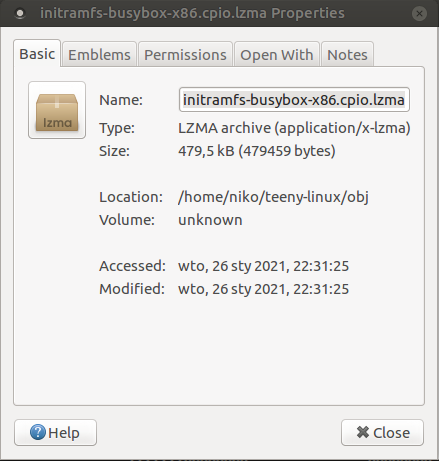

WYMAGANIA¶
1) Skompilowany system ma być uruchomiony w emulatorze QEMU (wersja dowolna) pod systemem Linux.(0.5 pkt.)¶
 Jak widać system działa poprawnie, uruchamia się oraz spełnia wszystkie wymagania projektowe.
2) Dokumentacja w MyST(https://myst-parser.readthedocs.io/en/latest/#) - opis projektu, opis wykorzystanych narzędzi(system budowania - system operacyjny, wybrany pakiet narzędzi, indywidualne narzędzia), opis wykorzystanych metod do minimalizacji systemu, zrzut ekranu pokazujący zajętość systemu wyrażoną w bajtach(może być oddzielnie jądro oraz oddzielnie system, jeżeli są uruchamiane osobno), jakiś komentarz do wyników.(1.0 pkt)¶
Dokumentacja została przygotowana za pomocą MyST.
Projekt wykorzystuje busybox 1.23 oraz kernel 5.20, a dokładniej teeny-linux-basic. Jest to największa dostępna wersja kernela, nie używałem mniejszych ponieważ:
a) nie do końca działały
b) jest to zadanie zaliczeniowe, a więc uznałem że należy zrobić wszystko samemu.
System budowany jest za pomocą make, buildroot działał stanowczo za wolno, ponadto miał wiele problemów ze zmniejszeniem rozmiaru jądra, uznałem iż szybciej będzie wszystko robić „ręcznie”.
Metoda minimalizacji - ostatecznie wyłączyłem wszystko co nie zawiera w sobie „Intel” lub „PCI” oraz kilka funkcji sieciowych. Jeżeli chodzi o busyboxa, wyłączyłem wszystko czego nie używam, z wyjątkiem kilku opcji które psują system pomimo nie używania ich przeze mnie.
Rozmiar jądra:

Rozmiar systemu:

Wyniki oceniam jako bardzo dobre, system zmieści się na dyskietce. Możliwe było ucięcie około 100kb jądra kompilując je na systemie x86, jednak VM box nie chciał uruchomić takiego systemu, niestety więc prezentuję ten nieco większy system.
3) Przygotowanie patchy ze zmianami wprowadzonymi do oryginalnych projektów. Przygotowanie wersji binarnych plików projektowych.(1.0 pkt.)¶
Patche umieszczam wraz ze sprawozdaniem w folderze patches, z powodu rozmiaru nie wstawiam ich do prezentacji.
4) Prezentacja.(0.5 pkt)¶
Działanie systemu można zauważyć w punkcie 1, oczywiście mogę również zaprezentować działanie na żywo.
5) Rozmiar jądro+system musi być mniejszy niż 2000000 bajtów.(2.0 pkt.)¶
Całkowity rozmiar wersji x64 wynosi 1 410 019 bajtów.